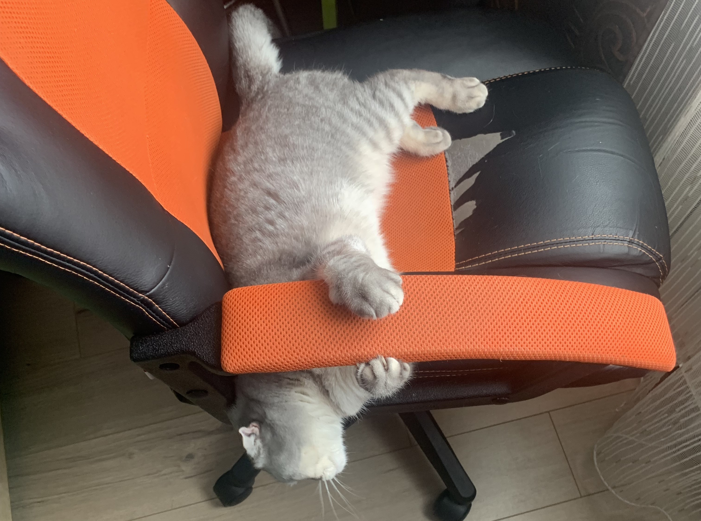
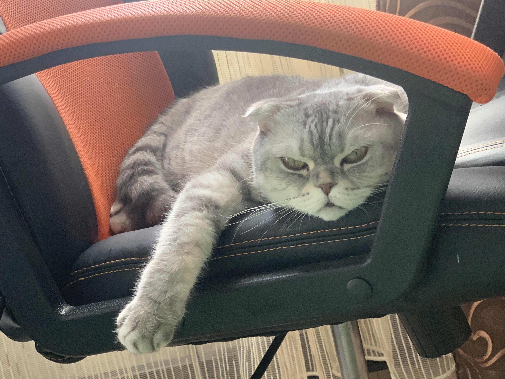
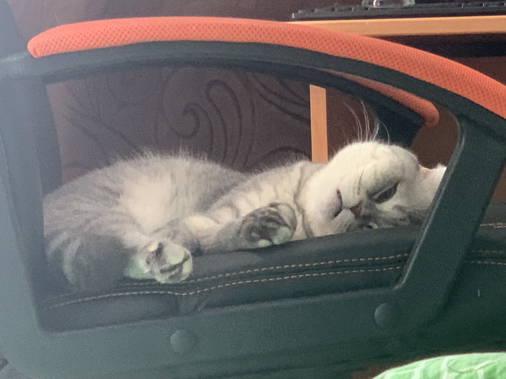

Шотла́ндская вислоу́хая ко́шка или ско́ттиш-фолд (англ. Scottish Fold) — порода домашних кошек с характерными загнутыми вперёд и вниз ушами, что вызвано действием доминантного гена, который возник в результате естественной мутации и оказывающий влияние на хрящи во всём организме. Это придаёт голове кошки характерный вид, которую часто описывают как «похожую на совиную».